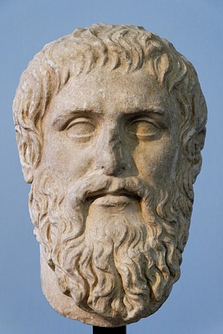

Платон
| Платон Πλάτων |
| древногръцки философ |
| 
Копие на скулптурен портрет от Силанион, изработен около 370 г. пр.Хр. |
|
| Роден |
7 май 427 г. пр.н.е.
Атина, Древна Гърция |
| Починал |
347 г. пр.н.е. (81 г.)
Атина, Древна Гърция |
| Философия |
| Епоха |
Античност |
| Школа |
Платонизъм |
| Идеи |
Платонически реализъм |
Ученик е на Сократ, автор на философски диалози и основател на Атинската
академия, която е първата институция за висше образование в Западния свят.
Наред със своя учител Сократ и с ученика си Аристотел, Платон поставя
основите на Западната философия и наука. Счита се, че за разлика от други
негови съвременници, цялото творчество на Платон остава непокътнато в
продължение на повече от 2400 години. Освен че е основополагаща фигура на
западната наука, философия и математика, Платон често се цитира и като
един от основателите на западната религия и духовност. Фридрих Ницше
нарича християнството „платонизъм за хората“.
Биография
Точното време и място на раждане на Платон не е известно, но е сигурно, че той принадлежи на аристократично и влиятелно семейство. Въз основа на древните източници, повечето съвременни изследователи смятат, че той е роден в Атина или на близкия остров Егина между 429 и 423 година пр.н.е.
Предмет на спорове е и самото име на Платон. Според Диоген Лаерций, рожденото име на философа е Аристокъл, както се казва и дядо му, но треньорът му по борба Аристон от Аргос му дава прозвището Платон („широк“), заради здравото му телосложение. В наши дни някои изследователи оспорват тази хипотеза, тъй като първите сведения за нея се появяват едва през епохата на Елинизма, а по времето на самия философ името Платон е често срещано в Атина.
За разлика от сдържаността си към самия себе си, Платон често включва изтъкнатите си родственици в своите диалози или споменава подробности за тях: на Хармид е наречен един от диалозите, Критий говори в диалозите „Хармид“ и „Протагор“, а Адимант и Главкон играят важна роля в „Държавата“. Тези и някои други споменавания говорят за значителната семейна гордост на Платон и помагат за възстановяването на неговото родословно дърво.
Ранни години
 Според Апулей Спевсип възхвалява ума и скромността на Платон като дете и „първите плодове на неговата младост, пропити с тежък труд и любов към учението“. Платон вероятно е обучаван по граматика, музика и гимнастика от най-изтъкнатите учители на своето време. Дикеарх дори твърди, че Платон е участвал в състезанията по борба на Истмийските игри. Още в ранна възраст Платон получава и обучение по философия, като първите му стъпки в тази област се осъществяват под влиянието на Кратил, известен философ и ученик на Хераклит, чрез когото се запознава с възгледа за постоянно изменящия се свят. Решаващ фактор за формирането на Платон като философ става учението на Сократ. Около 407 година пр.н.е. той започва да участва в кръга около прочутия атински диалектик и остава негов слушател до самата му смърт през 399 година пр.н.е. Точният характер на отношенията между Платон и Сократ остава предмет на спорове. В „Апология на Сократ“ Платон се представя за ентусиазиран млад последовател на Сократ и един от неговите ученици, които предлагат да платят глоба в замяна на смъртното му наказание. Федон от едноименния диалог изброява посетителите на Сократ в затвора през неговия последен ден, отбелязвайки, че Платон отсъства, тъй като е болен.
Според Апулей Спевсип възхвалява ума и скромността на Платон като дете и „първите плодове на неговата младост, пропити с тежък труд и любов към учението“. Платон вероятно е обучаван по граматика, музика и гимнастика от най-изтъкнатите учители на своето време. Дикеарх дори твърди, че Платон е участвал в състезанията по борба на Истмийските игри. Още в ранна възраст Платон получава и обучение по философия, като първите му стъпки в тази област се осъществяват под влиянието на Кратил, известен философ и ученик на Хераклит, чрез когото се запознава с възгледа за постоянно изменящия се свят. Решаващ фактор за формирането на Платон като философ става учението на Сократ. Около 407 година пр.н.е. той започва да участва в кръга около прочутия атински диалектик и остава негов слушател до самата му смърт през 399 година пр.н.е. Точният характер на отношенията между Платон и Сократ остава предмет на спорове. В „Апология на Сократ“ Платон се представя за ентусиазиран млад последовател на Сократ и един от неговите ученици, които предлагат да платят глоба в замяна на смъртното му наказание. Федон от едноименния диалог изброява посетителите на Сократ в затвора през неговия последен ден, отбелязвайки, че Платон отсъства, тъй като е болен.
В своите диалози Платон никога не говори от свое име и не е сигурно доколко образът на Сократ в тях отразява действителните възгледи на реалния Сократ.
Философия
В диалозите на Платон, Сократ и неговата група от спорещи имат подробно какво да кажат по много теми, включително няколко аспекта на метафизиката. Те включват религията и науката, човешката природа, любовта и сексуалността. Повече от един диалог противопоставя възприятието и реалността, природата и обичая, тялото и душата. Франсис Корнфорд се позовава на „двойните стълбове на платонизма“ като теория за формите, от една страна, и от друга страна, доктрината за безсмъртието на душата.
- Метафизика
- Душата
- Епистемология
- Kласическата теория на познанието
- Етика
- Справедливост
- Реторика
Към началната страница